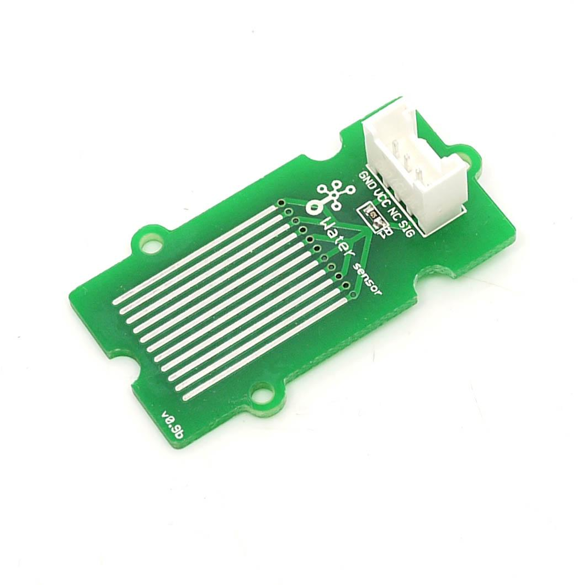
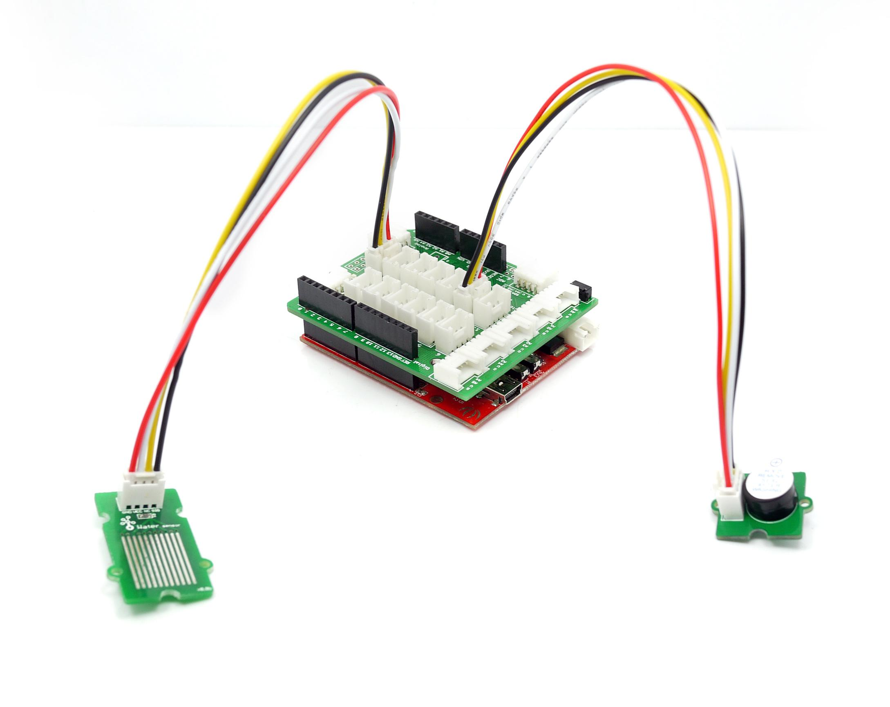

The Water Sensor module is part of the Grove system. It indicates whether the sensor is dry, damp or completely immersed in water by measuring conductivity. The sensor traces have a weak pull-up resistor of 1 MΩ. The resistor will pull the sensor trace value high until a drop of water shorts the sensor trace to the grounded trace. Believe it or not this circuit will work with the digital I/O pins of your Arduino or you can use it with the analog pins to detect the amount of water induced contact between the grounded and sensor traces.
Model: SEN113104

This device is for educational and hobby applications only. It is not intended to be used in applications where its malfunction could result in damage to property or human safety.
| Item | Min | Typical | Max | Unit |
|---|---|---|---|---|
| Working Voltage | 4.75 | 5.0 | 5.25 | V |
| Current | <20 | mA | ||
| Working Temperature | 10 | - | 30 | ℃ |
| Working Humidity (without condensation) | 10 | - | 90 | % |
Connect the module to the Basic board using any of the digital pin. You can gain the value of the signal pin. When there is water on the bare conducting wires, the value is LOW. Otherwise, it will be HIGH.
The following sketch demonstrates a simple application of using the Water sensor to control the buzzer. As the picture on the below indicates, the Water sensor is connected to digital port 8 of the Grove - Basic Shield and the Buzzer is connected to digital port 12. When there is water on the bare conducting wires, the SIG pin output a LOW voltage. Then the Buzzer sounds. The hardware installation is as follows:

/*macro definition of water sensor and the buzzer*/
#define WATER_SENSOR 8
#define BUZZER 12
void setup()
{
pins_init();
}
void loop()
{
if(isExposedToWater())
soundAlarm();
}
void pins_init()
{
pinMode(WATER_SENSOR, INPUT);
pinMode(BUZZER, OUTPUT);
}
/************************************************************************/
/*Function: When the sensor is exposed to the water, the buzzer sounds */
/* for 2 seconds. */
void soundAlarm()
{
for(uint8_t i = 0;i < 20;i ++)
{
digitalWrite(BUZZER, HIGH);
delay(50);
digitalWrite(BUZZER, LOW);
delay(50);
}
}
/************************************************************************/
/*Function: Determine whether the sensor is exposed to the water */
/*Parameter:-void */
/*Return: -boolean,if it is exposed to the water,it will return true. */
boolean isExposedToWater()
{
if(digitalRead(WATER_SENSOR) == LOW)
return true;
else return false;
}
1.You should have got a raspberry pi and a grovepi or grovepi+.
2.You should have completed configuring the development enviroment, otherwise follow here.
3.Connection
4.Navigate to the demos' directory:
cd yourpath/GrovePi/Software/Python/
nano grove_water_sensor.py # "Ctrl+x" to exit #
import time
import grovepi
# Connect the Grove Water Sensor to digital port D2
# SIG,NC,VCC,GND
water_sensor = 2
grovepi.pinMode(water_sensor,"INPUT")
while True:
try:
print grovepi.digitalRead(water_sensor)
time.sleep(.5)
except IOError:
print "Error"
5.Run the demo.
sudo python grove_water_sensor.py
If you have questions or other better design ideas, you can go to our forum or wish to discuss.
Copyright (c) 2008-2016 Seeed Development Limited (www.seeedstudio.com / www.seeed.cc)